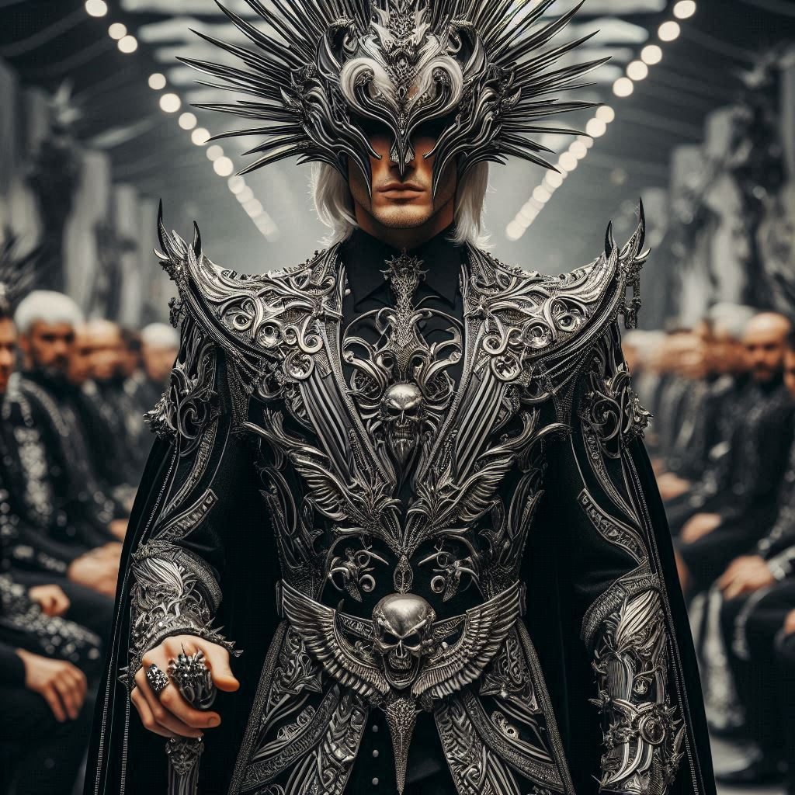
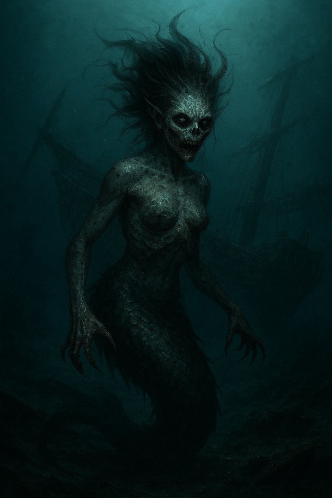
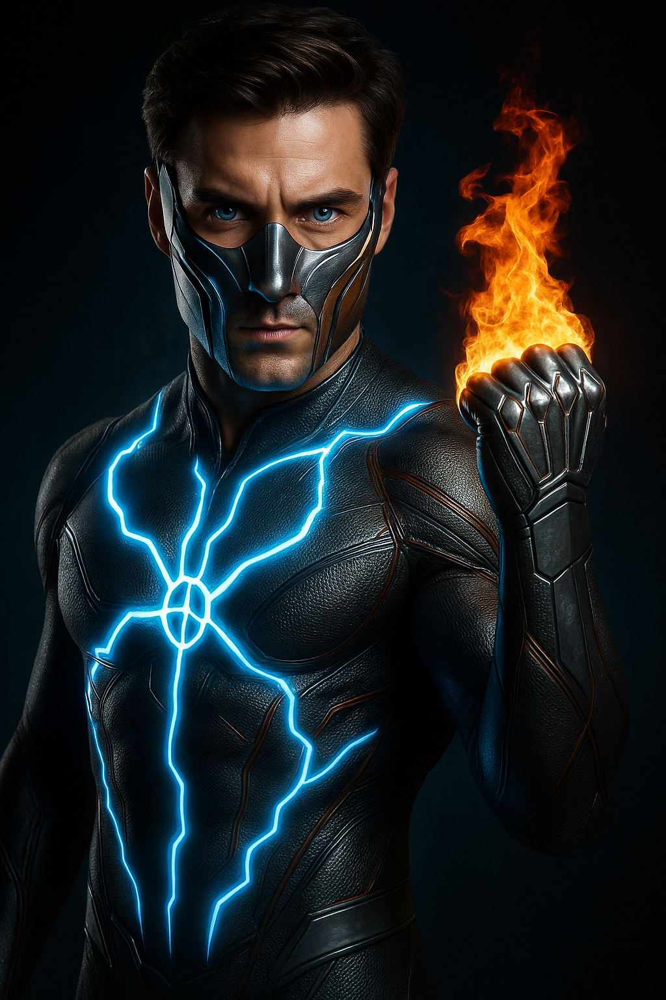
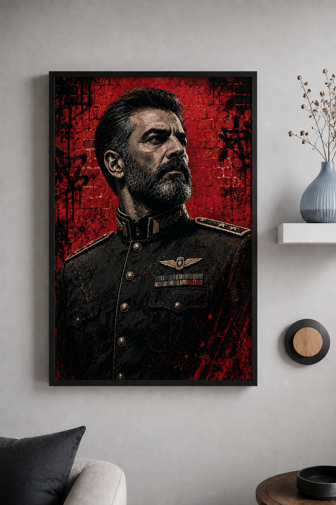
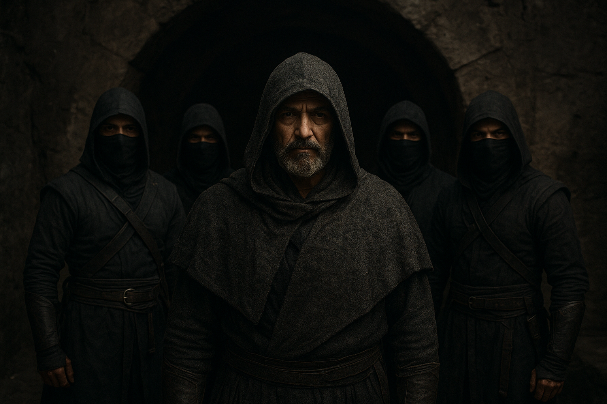

لرد فیزیکا
قهرمان اصلی
توانایی تغییر قوانین فیزیک در یک محدوده مشخص. ذهنی نابغه و قدرتی فراتر از تصور.

آگناتوس
ابرشرور
کنترل ذهن، نفوذ در اراده انسانها و هدایت آشوب برای تسلط بر تهران.

استریکس
قهرمان
کنترل اشیا با ذهن و توانایی پیشبینی حرکات دشمنان.

تسکین
پشتیبان
توانایی بیحس کردن درد و کنترل سیستم عصبی اطرافیان.

بوسلامه
ابرشرور
توانایی بیحس کردن درد و کنترل سیستم عصبی اطرافیان.

الکتروپالس
قهرمان
توانایی بیحس کردن درد و کنترل سیستم عصبی اطرافیان.

ژنرال کیانفر
ابرشرور
توانایی بیحس کردن درد و کنترل سیستم عصبی اطرافیان.

حشاشین
افسانه
توانایی بیحس کردن درد و کنترل سیستم عصبی اطرافیان.